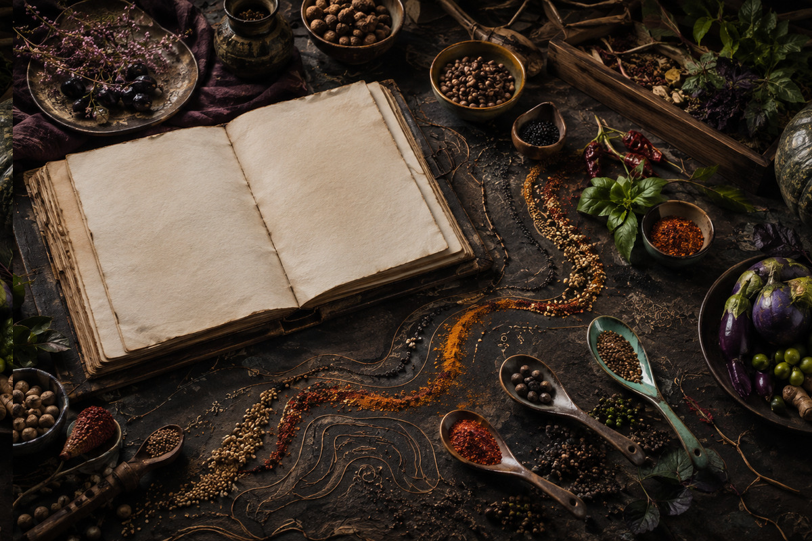

Fire to Table: Building Dinner Around Char and Smoke
A practical route from controlled heat to layered, balanced plates. This field guide turns the idea into a calm, repeatable kitchen route.

Home cooking becomes adventurous when curiosity is supported by a clear method. The purpose of this guide is not to make dinner complicated. It is to help you notice more, choose with confidence and preserve what you learn.
Notice before you season
Start by tasting the ingredient in its uncooked state when safe. Aroma, moisture and density reveal more than a fixed quantity ever can. A tomato may need only salt and oil; a winter root may ask for heat, sweetness and time. This first observation prevents automatic cooking and makes the rest of the route deliberate. Write down one sensory fact, because a useful note trains attention better than a perfect photograph. For fire to table: building dinner around char and smoke, this matters because the central idea becomes easier to recognise when every decision has a reason. Keep the method flexible: ingredients, equipment and appetite change, but careful observation remains dependable.
Try the step once exactly as planned, then repeat it with one controlled change. Comparing those outcomes teaches more than adding several new variables at once. Invite another person to taste without telling them what to notice. Their language may reveal balance, texture or aroma that you stopped perceiving while cooking.
Choose one clear direction
A coherent plate does not need many tricks. Decide whether the meal is led by char, broth, crispness, fermentation, gentle sweetness or fresh green fragrance. That direction acts like a compass when choices multiply. Ingredients that reinforce the central idea can stay; those that distract can wait for tomorrow. Restraint is not minimalism for its own sake. It creates enough quiet for the important flavour to be understood. For fire to table: building dinner around char and smoke, this matters because the central idea becomes easier to recognise when every decision has a reason. Keep the method flexible: ingredients, equipment and appetite change, but careful observation remains dependable.
Try the step once exactly as planned, then repeat it with one controlled change. Comparing those outcomes teaches more than adding several new variables at once. Invite another person to taste without telling them what to notice. Their language may reveal balance, texture or aroma that you stopped perceiving while cooking.
Build contrast with purpose
Memorable food moves between sensations. Pair yielding vegetables with toasted crumbs, a rich sauce with pickled shallot, or warm grain with cool herbs. Contrast should clarify the main ingredient rather than compete with it. Think across temperature, texture, acidity, aroma and colour, then choose only two useful oppositions. This approach makes even pantry cooking feel composed while keeping the work manageable for a real evening. For fire to table: building dinner around char and smoke, this matters because the central idea becomes easier to recognise when every decision has a reason. Keep the method flexible: ingredients, equipment and appetite change, but careful observation remains dependable.
Try the step once exactly as planned, then repeat it with one controlled change. Comparing those outcomes teaches more than adding several new variables at once. Invite another person to taste without telling them what to notice. Their language may reveal balance, texture or aroma that you stopped perceiving while cooking.
Control heat, not just time
Minutes are only an approximation; heat transfer is the real event. Listen for the pan, watch surface moisture and notice the smell as browning begins. Move food closer to or farther from the heat to control pace. A crowded vessel steams, a dry open surface roasts, and a covered pot retains moisture. Once you understand these signals, unfamiliar ingredients become less intimidating because the physical process remains recognisable. For fire to table: building dinner around char and smoke, this matters because the central idea becomes easier to recognise when every decision has a reason. Keep the method flexible: ingredients, equipment and appetite change, but careful observation remains dependable.
Try the step once exactly as planned, then repeat it with one controlled change. Comparing those outcomes teaches more than adding several new variables at once. Invite another person to taste without telling them what to notice. Their language may reveal balance, texture or aroma that you stopped perceiving while cooking.
Season in layers
Salt added early can penetrate, while salt added late sharpens the surface. Acid may brighten a sauce at the end but can also tenderise or transform when used earlier. Spices bloom differently in fat, water and direct heat. Seasoning in stages makes room for correction and produces depth without heaviness. Taste after every meaningful change, pausing long enough for heat and aroma to settle before deciding what the dish needs next. For fire to table: building dinner around char and smoke, this matters because the central idea becomes easier to recognise when every decision has a reason. Keep the method flexible: ingredients, equipment and appetite change, but careful observation remains dependable.
Try the step once exactly as planned, then repeat it with one controlled change. Comparing those outcomes teaches more than adding several new variables at once. Invite another person to taste without telling them what to notice. Their language may reveal balance, texture or aroma that you stopped perceiving while cooking.
Create a practical service plan
Good dinner timing is an act of hospitality toward the cook as well as the table. Identify what can rest, what must remain crisp and what improves when made ahead. Prepare cold garnishes first, hold sauces gently, and reserve the final minutes for the element that truly requires attention. A small written sequence reduces frantic movement and gives you freedom to speak with people instead of guarding every pan at once. For fire to table: building dinner around char and smoke, this matters because the central idea becomes easier to recognise when every decision has a reason. Keep the method flexible: ingredients, equipment and appetite change, but careful observation remains dependable.
Try the step once exactly as planned, then repeat it with one controlled change. Comparing those outcomes teaches more than adding several new variables at once. Invite another person to taste without telling them what to notice. Their language may reveal balance, texture or aroma that you stopped perceiving while cooking.
Record the useful truth
After eating, note one success, one adjustment and one question. Avoid writing a heroic reconstruction of the meal; preserve the detail that will change your next attempt. Perhaps the pan needed more space, the dressing wanted less sweetness, or the herbs worked best torn at the table. These modest observations accumulate into personal technique. Over time, your journal becomes a map shaped by your equipment, seasons, tastes and people. For fire to table: building dinner around char and smoke, this matters because the central idea becomes easier to recognise when every decision has a reason. Keep the method flexible: ingredients, equipment and appetite change, but careful observation remains dependable.
Try the step once exactly as planned, then repeat it with one controlled change. Comparing those outcomes teaches more than adding several new variables at once. Invite another person to taste without telling them what to notice. Their language may reveal balance, texture or aroma that you stopped perceiving while cooking.
Carry the idea forward
A culinary route should create possibilities beyond one recipe. Leftover roasted vegetables can become a bright salad, a blended soup or a filling beneath eggs. Extra herb sauce can season grains, beans or tomorrow’s sandwich. Store components safely, label them clearly and decide their next use before they disappear into the refrigerator. Continuity reduces waste and turns weekday cooking into a connected practice rather than a series of isolated emergencies. For fire to table: building dinner around char and smoke, this matters because the central idea becomes easier to recognise when every decision has a reason. Keep the method flexible: ingredients, equipment and appetite change, but careful observation remains dependable.
Try the step once exactly as planned, then repeat it with one controlled change. Comparing those outcomes teaches more than adding several new variables at once. Invite another person to taste without telling them what to notice. Their language may reveal balance, texture or aroma that you stopped perceiving while cooking.
Cook once for dinner.
Cook again for understanding.
Use this guide as a starting coordinate, not a border. The most valuable version will be the one adjusted to your market, pantry and table.